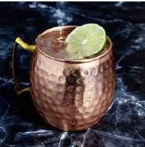

O Moscow Mule é um cocktail americano servido tradicionalmente numa caneca de cobre que realça o sabor picante do ginger beer.
Método de Preparo
GuarniçãoDecore com uma fatia de lima. |
 |
O Moscow Mule nasceu naquele dia em 1941. A combinação perfeita de vodka e ginger beer, alojada numa caneca de cobre sólida que mantinha a bebida fria e realçava o seu sabor e aroma, resultando num cocktail pelo qual a América se apaixonaria pelo século seguinte e além.